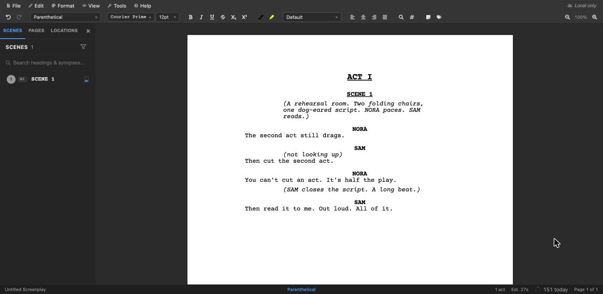
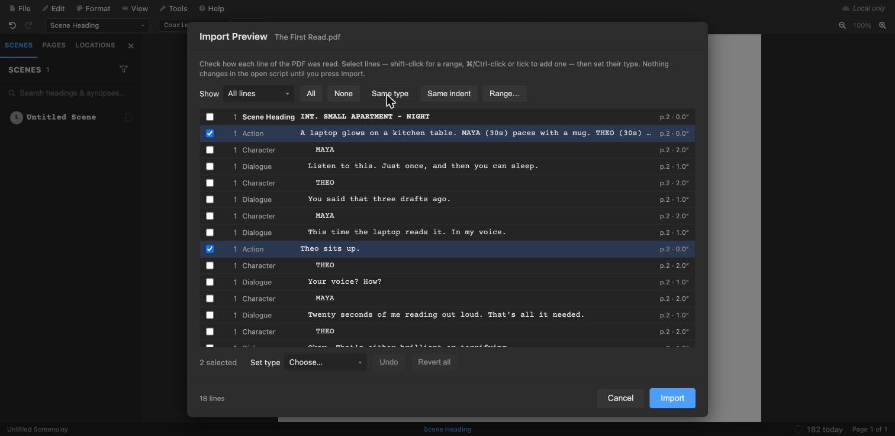

Guides
The best free screenwriting software in 2026: an honest comparison
Which screenwriting apps are really free? Twelve compared on what their free versions actually allow, checked against each vendor’s own pages.
2 November 2026

Formatting
Stage play format: how to format a play script, with examples and a free template
Act and scene headings, centred character names, full-width dialogue and italic stage directions, with an example and a free template.
2 November 2026

How-to · File formats
How to convert a PDF screenplay to Final Draft (.fdx) for free
Turn a screenplay PDF into an editable Final Draft file in your browser. Check every line before importing; nothing is uploaded.
2 November 2026

How-to · File formats
How to convert Final Draft (.fdx) and other screenplay formats to PDF or Word for free, without Final Draft
No Final Draft licence, no install, no sign-up. Open the .fdx at open-draft.com and export a PDF or Word file. The script is converted in your browser and never uploaded.
2 November 2026

How-to · Table Read
Hear your script in your own voice for free
Clone your voice from about fifteen seconds of speech, entirely on your own computer, and give it to any character in OpenDraft’s Table Read.
2 November 2026